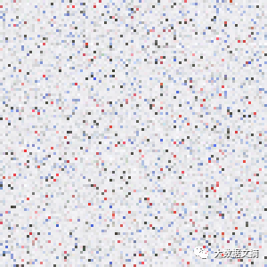
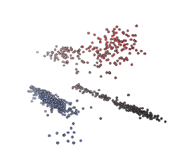

手把手：扫描图片又大又不清晰？这个Python小程序帮你搞定！
大数据文摘作品
编译：HAPPEN、于乐源、小鱼
一位乐于分享学生精彩笔记的大学教授对于扫描版的文件非常不满意——颜色不清晰并且文件巨大。他因此用python自己写了一个小程序来解决这个问题。
这个程序可以用来整理手写笔记的扫描件哦，输出的图片不仅很清晰，而且文件大小只有100多KB！
先来看一个例子：

左：输入扫描件（300 DPI，7.2MB PNG/790KB JPG.）右：输出图片（300 DPI，121KB PNG）。
如果你急于上手操作，可以直接查看Github repo中的代码，或跳到本文结果部分，看看炫酷的颜色簇交互式三维图。
在大数据文摘后台回复“压缩”下载本文代码哦~
免责声明：上述过程或许可以用Office Lens应用程序实现，或者其他工具也可以实现。本文只是一个实用方法分享，不是什么发明创造。
起因
一些我任课的班级没有指定的教材，这是因为我更喜欢每周指定一个“学生记录员”，与班里其他同学分享他们的讲义。这样可以为学生提供一些书面资源，以便他们需要时可以进行对照。笔记以PDF的格式发布在课程网站。
在学校，我们有一台能够将笔记扫描成PDF文件的“智能”复印机，但是它生成的文件不够招人喜欢。下图是手写笔记的输出示例：

复印机好像随意地决定是否将每个数学符号进行二值化，或者转换后的JPG很不理想（如上图中的平方根符号）。因此我决定对上述问题进行优化。
概述
我们从某位同学一页漂亮的笔记开始处理，笔记扫描件如下：

以300 DPI精度扫描的原始PNG图像大小约为7.2MB；转换为图像品质较高的JPG格式后，文件大小约为790KB。由于PDF扫描件通常采用PNG或JPG作为容器格式，我们当然不希望在转换为PDF时损失文件信息。
但是考虑到网页加载时间，每页笔记800KB已经相当大了，我希望获得文件大小更接近100KB/页的图像。
虽然这位学生的笔记很整洁，但笔记的扫描件看起来有点乱。原因是复印机将这页笔记的反面内容也进行了扫描，这会分散读者的注意力，而对于JPG或PNG编码器来说，这种情况比纯色背景的图片更难压缩。
下图是我写的noteshrink.py程序的输出结果：

输出结果是一个相对较小的PNG文件，大小只有121KB。不仅图像内存变小，而且看起来更清晰！这才是我想要的！
处理过程和彩色图像基础
以下是生成小内存且清晰的图像所需的步骤：
1.识别原始扫描图像的背景色。
2.根据背景色的不同阈值分离出前景色。
3.从前景色中选择几种“代表性颜色”，作为生成PNG过程中需要的索引色。
在深入研究这些步骤之前，先来了解下彩色图像是如何以数字形式进行存储的。由于人类眼睛中有三种不同类型的感色细胞，因此我们可以通过组合不同强度的红色、绿色和蓝色来重建任何颜色。重构过程就是将每种颜色与RGB颜色空间中的三维点一一对应，如下所示：

尽管真正的向量空间允许无限数量的像素亮度连续变化，但为了将颜色以数字形式存储在计算机上，我们需要对上述像素范围进行离散处理——通常红色、绿色和蓝色分别用8位通道色表示。这种将像素类比成三维色彩空间坐标的分析方法将为我们接下来的理解与重建提供巨大的帮助。
识别背景色
由于页面的大部分地方没有墨迹或线条，也许有人会认为纸张本身的颜色将会是扫描图像中出现频率最高的一种颜色——即复印机会将白纸的每个像素表示为相同的RGB值。
如果结果真是这样，那么分离背景色将不会有任何问题。遗憾的是，情况并非总是如此，由于复印机玻璃板上的灰尘和污迹、页面本身的颜色变化、传感器噪声等不同的因素，像素的RGB值会发生随机的变化，页面的“实际颜色”其实可能涵盖数千个不同的RGB值。
扫描图像的原件大小为2081×2531，共5267011个像素点。虽然我们可以逐一处理每个像素点，但是处理输入图像的代表性像素点会更快。
noteshrink.py程序默认采集输入图像5%的像素点（在扫描精度为300 DPI的情况下）。接下来，我们先选择一个10000点的小像素集，结果如下图所示：

虽然结果与笔记扫描件的页面差异很大（没有手写墨迹）——但两幅图像的颜色分布几乎完全相同。两张图片中大多像素点呈灰白色，也有少量红色、蓝色和深灰色的像素点。然后我们对10000个像素点按亮度进行了排序（例如将每个像素点的R、G和B进行求和），结果如下：

从远处看，图像底部80-90％的区域看上去是同一种颜色；然而仔细观察后，你会发现很多不一致的细节。事实上，上图中主要颜色（RGB值为（240,240,242））的像素个数仅为226——占比还不到总像素数10000的3％。
由于上述方法中主要颜色占总像素的比例很小，能否将它作为代表性颜色来描述图像的颜色分布就值得怀疑。如果在寻找方法之前先减小图像的位深度，我们将更好地识别页面的主要颜色。
因此我们把每个色彩通道四个最低有效位置零，将原来每个8位通道色简化成4位通道色，结果如下所示：

现在主要颜色的RGB值为（224,224,224），并且其像素点数为3623，占总像素的36％。通过减少位深度，实际上我们将相似的像素分到更大的“组”，这将更容易在数据中找到一个强峰。
可靠性和精确度之间存在一个折衷方案：小像素集可以更好地区分颜色，但大像素集处理起来更可靠。最后，我决定用6位通道色表示来识别背景色，这似乎是两个极端之间的一个最佳选择。
分离前景色
一旦识别出背景色，就可以根据图像中每个像素与背景色的相似程度来进行阈值计算。通常来说，通过计算两个像素坐标的欧几里得距离，再与预设的阀值进行比较就能得到他们之间的相似性。可这个最常用的方法却无法正确区分下面的几个颜色：

下表展示了每种颜色与背景色的欧几里德距离：

从表中可以看出，笔记反面渗过来的深灰色应该被分为背景色，但它与白色背景的差值要比粉红色的差值更大，而粉红色应该是前景色。如果使用这种方法，就无法有效分离出粉红色的前景色，因为总会包含渗过来的深灰色。
为了解决这个问题，我们可以将图片从RGB空间移动到色相-饱和度-亮度（Hue-Saturation-Value，HSV）空间，HSV将RGB的立方体转变为圆柱体，其剖面图如下：

HSV圆柱体上表面边缘呈现圆形分布的彩虹色，色度（hue）是指围绕圆柱体的中心轴旋转的角度（红色为0°）。圆柱体的中心轴从底部的黑色、中间的灰色渐变到顶部的白色——整个轴的饱和度（saturation）为0，外圆周上鲜艳的颜色饱和度都为1。最后，亮度（value）是指颜色的整体亮度，其变化范围从底部的暗色调到顶部的亮色调。
现在让我们用HSV重新区分一下之前的颜色：

从表中可以看出，白色、黑色和灰色的亮度差别很大，但它们的饱和度都很接近且数值较低——远低于红色或粉红色。通过分析图像的HSV值，我们可以利用下面的标准来标记属于前景色的像素，只需要满足其中一条就可以：
该像素的亮度与背景色的差值大于0.3；
该像素的饱和度与背景色的差值大于0.2；
第一条标准可以分离出笔记中的黑色墨迹，第二条标准则可以分离出红色墨迹和粉色线条，且这两个标准在选取前景色时排除了笔记反面渗透过来的灰色。但不同的图像可能需要不同的饱和度或亮度阈值，详情请参阅结果部分。
选择一组有代表性的颜色
当我们将前景色分离后，会得到与页面上笔记的颜色相对应的一组颜色。将得到的像素点重新放进RGB空间并计算每个像素对应的坐标，可以看到新的散点图呈现簇状，每一个颜色会形成自己的色块：

由three.js提供支持的交互式三维图
现在我们的目标是将原始的图像（24位/像素）中的所有颜色用8种“索引色”进行替换（8并非固定的数字）。这样做有两种好处：首先，它缩小了文件的大小，因为现在只需要3位就可以指定一种颜色（因为8 = 2^3）；此外，它使得生成的图像在视觉上更美观，因为在最终输出的图像中，相似颜色的笔记都会只用一种颜色替代。
为了实现这个目标，我们通过数据驱动的方式，也就是利用上图中的“簇状”特性，选择每个色簇的中心坐标来表示这一组颜色。用术语说，我们将通过聚类分析来解决一个色彩量化问题（其实是向量量化）。
具体的做法是，通过k-means算法在一个颜色簇中找到一个点，这个点到其他每个点的平均距离之和最小。对上述数据集使用这个方法，得到7个不同的颜色簇：

由three.js提供支持的交互式三维图
在这张图中，黑色轮廓彩色实心的点表示前景色像素的颜色坐标，通过彩色的线将它们连接到RGB色彩空间中最近的中心点。当图像转换为索引颜色时，每个前景色像素的颜色将被替换为距其最近的中心点的颜色。最后，包围每个颜色簇的圆表示每个中心点距相关像素的最远距离。
细节调整
除了能够设置亮度和饱和度的阈值之外，noteshrink.py还具有几个其他值得一提的功能。默认情况下，它通过将亮度的最小和最大值重新调整为0和255来增加最终调色板的鲜艳度和对比度。如果不进行调整，上述扫描件的8色调色板将如下所示：

调整后的调色板色彩更鲜明：

在完成前景色分离后，还有一个选项可以强制将背景色变为白色。通过转换为索引颜色的图像可以进一步压缩PNG文件，noteshrink.py还可以运行如optipng、pngcrush或pngquant等图像优化工具。
该程序最终会将多个压缩后的图像合并为一个PDF文件，就像使用ImageMagick的转换工具一样。此外，noteshrink.py会自动对输入文件名进行数字排序（而不是像shell globbing 那样按字母顺序排列）。当复印机输出的文件名是scan 9.png和scan 10.png时是非常有帮助的，上述排序功能保证了压缩后的页面在PDF中也保持同样的顺序。
结果
以下是一些程序输出的例子。第一个输出的PDF使用默认的阈值设置，看起来很棒：

不同颜色簇的可视化：

由three.js提供支持的交互式三维图
第二个PDF需要将饱和度阈值降低到0.045，因为蓝灰色的线条颜色太深不便于阅读：

对应的颜色簇：

由three.js提供支持的交互式三维图
最后这个PDF来自于工程师的方格纸，在这个过程中我将亮度阈值设置为0.05，因为背景和线条之间的对比度非常低：

对应的颜色簇：

由three.js提供支持的交互式三维图
综上，这四份PDF文件大小约788KB，平均每页130KB大小。
结论与展望
我很高兴能开发一个实用的工具，这个工具可以将课程网站中的手写笔记的PDF进行加工和美化。与此同时，记录下这整个过程也让我受益匪浅，我先后在维基百科上补充了关于颜色量化的更多内容，也促使我尝试并学习了three.js。
如果再次启动这个项目，我想尝试一下其他的量化方案，就在前几天还在想用光谱簇结合最近邻图的方式去尝试一下，当时十分兴奋认为这是一个绝佳的方案，然后就发现已经有一篇2012年的论文提出了完全一样的构思，哎…
你也可以尝试使用最大期望算法来生成描述颜色分布的高斯混合模型——不确定之前是否有人做过类似的实现。当然感兴趣的同学也可以试试其他有趣的想法，如使用Lab这类视觉上均匀的色彩空间进行颜色聚类，并尝试自动给出指定图像的“最佳”聚类数量。
在大数据文摘后台回复“压缩”下载noteshrink.py哦~
原文链接：
https://mzucker.github.io/2016/09/20/noteshrink.html
【今日机器学习概念】
Have a Great Definition

开课倒计时5天
数据科学实训营第5期
优秀助教推荐|姜姜
作为一枚对数据分析的理解仅限于Excel的小白，曾经一直认为通过写代码来分析数据是件无比高大上的事。可是，在数据科学实训营居然就实现了！
手把手的教学方式，助教和同学们热烈的交流讨论，让我慢慢地觉得一行行代码如此亲切。而当把自己头脑中的构思通过代码实现，看到结果的那一刻，真是无比激动！
经过Kaggle、天池的案例的历练，对这些数据比赛也开始兴趣盎然，有没有小伙伴有兴趣一起去玩一玩的？
作为第5期的北美地区助教，寄语各位学员：前方高能，请准备好足够的时间，如果你能按时提交作业，结业时一定脱胎换骨。

志愿者介绍